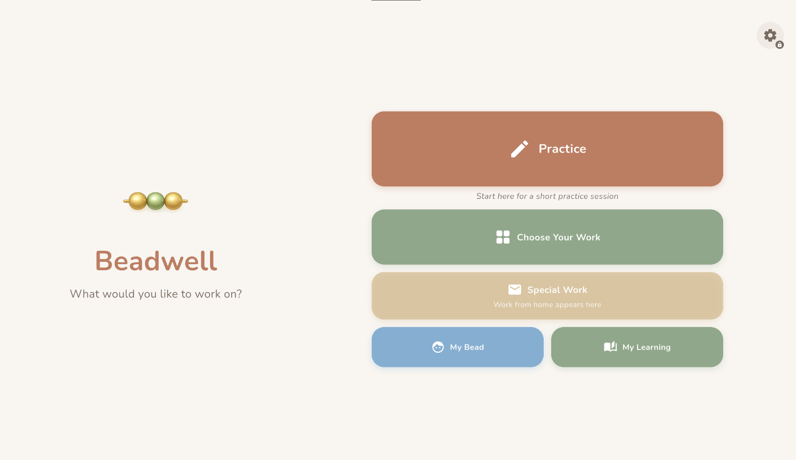
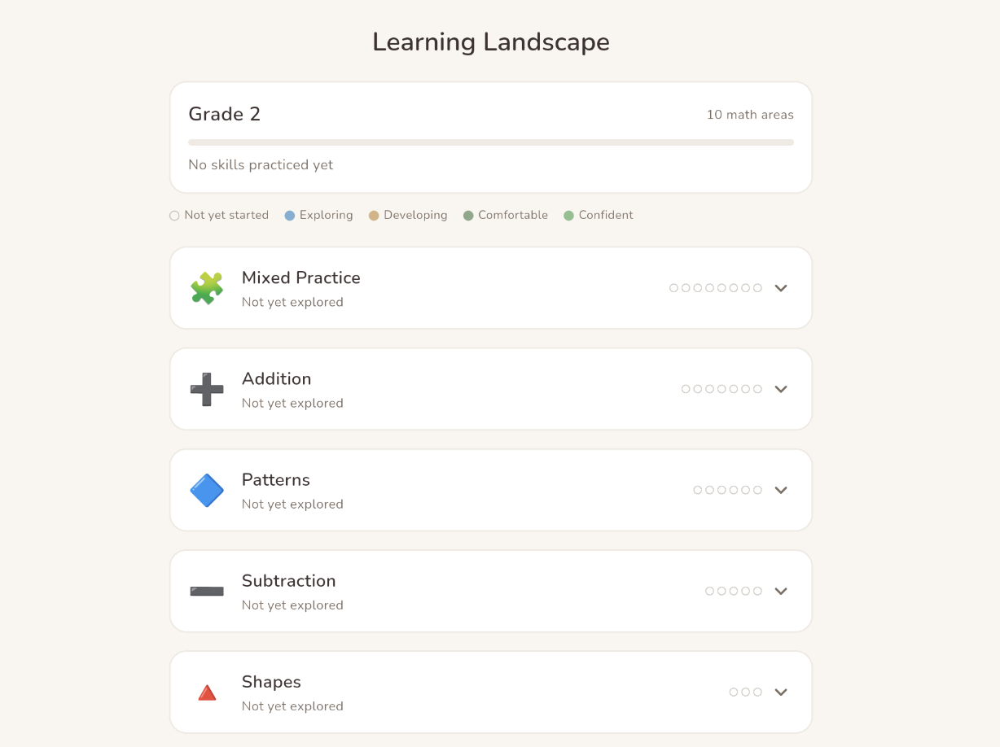
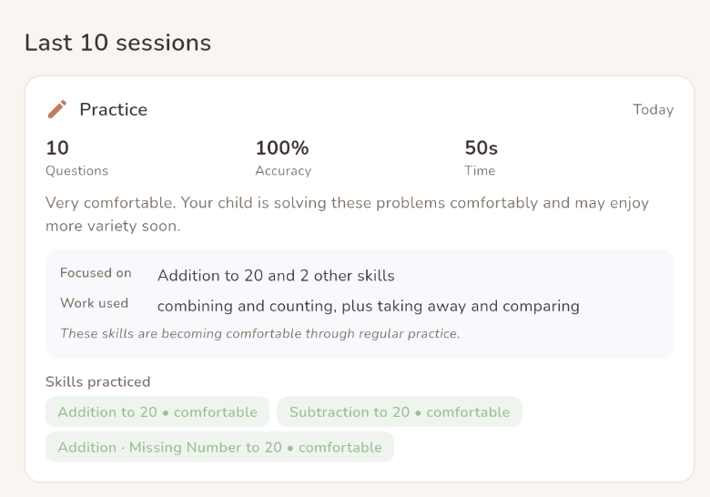
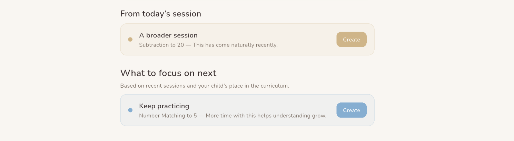
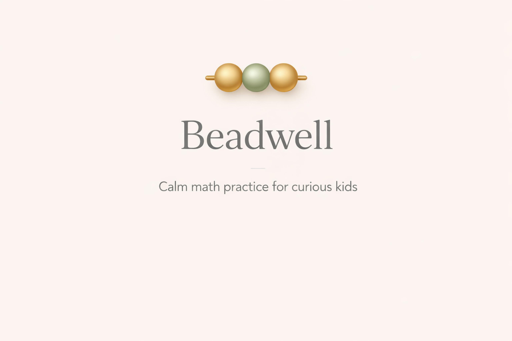
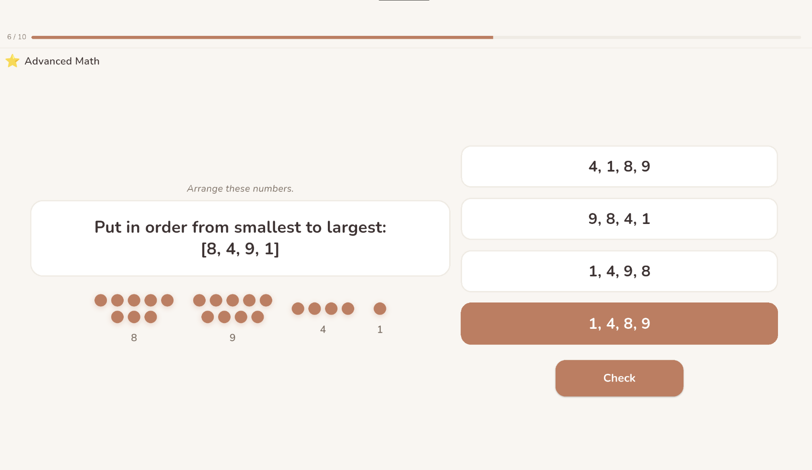
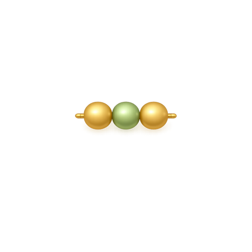

Short sessions. Gentle feedback. No points, no streaks, no pressure — just focused practice for Kindergarten through Grade 3, with quiet insight for parents. All on your device.

Beadwell is math practice for children in Kindergarten through Grade 3. Younger children work with objects and pictures — counting, comparing, shapes, building with rods. Numbers and equations follow when they're ready.
Sessions are short — 5 to 15 questions — with gentle feedback and no time pressure. Children advance when they're ready, not when they've filled a progress bar.
Beadwell is built on a simple idea: children learn well when they feel calm.
No coins, levels, leaderboards, or noisy rewards. Your child stays focused on the math, not on chasing scores.
Children see gentle encouragement and natural feedback — never accuracy percentages or rankings.
New concepts appear when skills are solid, not when a set number of questions have been answered.
Create focused practice sessions with personal messages and family photos — shaped by you, not generated by an algorithm.
Counting, comparing, shapes, patterns, number rods, and more. Younger children work with pictures and objects before seeing equations — new work appears when your child is ready.
Calm summaries of what your child practiced, skills grouped by comfort level, and suggestions for what to try next. You can turn any suggestion into focused practice in one tap.
All data stays on your device. No accounts, no cloud sync, no analytics, no telemetry. This is a product commitment, not a temporary limitation.
Your child sees calm practice and gentle encouragement. You see useful insight — session summaries, comfort levels, and next-step suggestions — behind a simple parent gate.

See where your child stands across every math area — which skills are comfortable, which are developing, and what comes next. No scores, just clear developmental stages.

After each session, see what your child practiced, how comfortable they seemed, and which skills are becoming natural — in honest, gentle language.

When an area could use more practice, the app suggests a focused session you can create in one tap — with the right skill and level already chosen.
The result is a different kind of learning app: less pressure for children, more clarity for parents.
Beadwell's interface is designed to feel warm and uncluttered — a calm workspace for focused practice.

Splash screen

Practice activity with concrete visual aids
Beadwell has no internet permission in its production build. There are no analytics SDKs, no crash reporting, no authentication systems, and no API endpoints. Your child's practice data, your family's celebration photos, and your settings all stay on your device.
You can export your data at any time through the parent settings. You can reset everything with a single action. And if you uninstall the app, every trace of it leaves with it.
Offline-first
No data leaves your device

Ages 5–9 · Kindergarten through Grade 3 · Tablet-focused